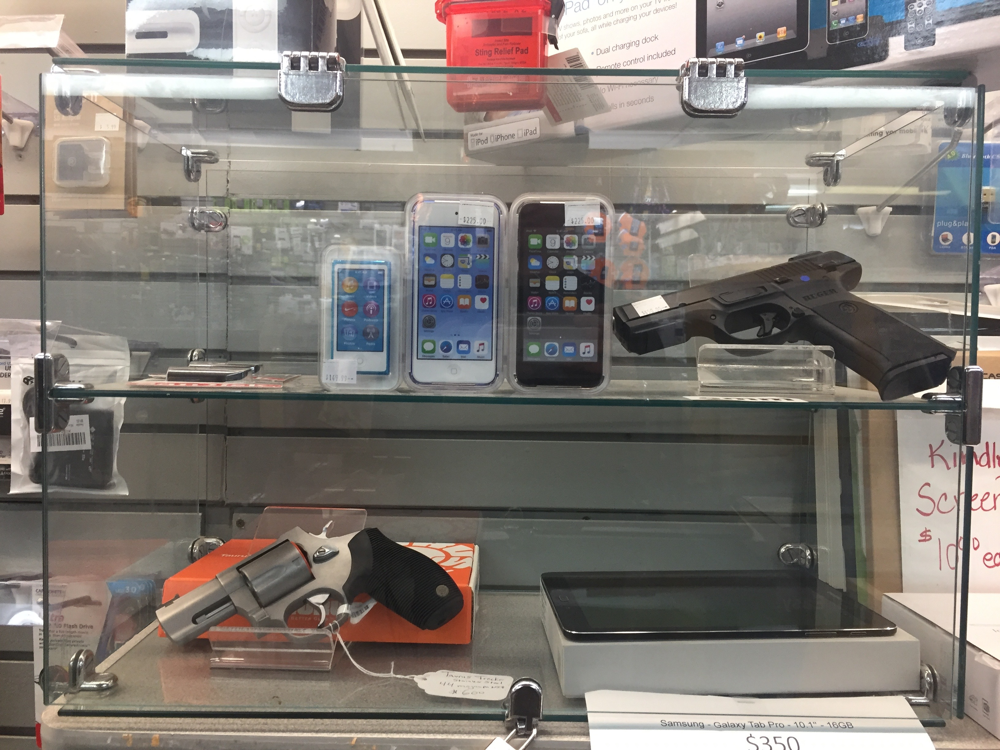
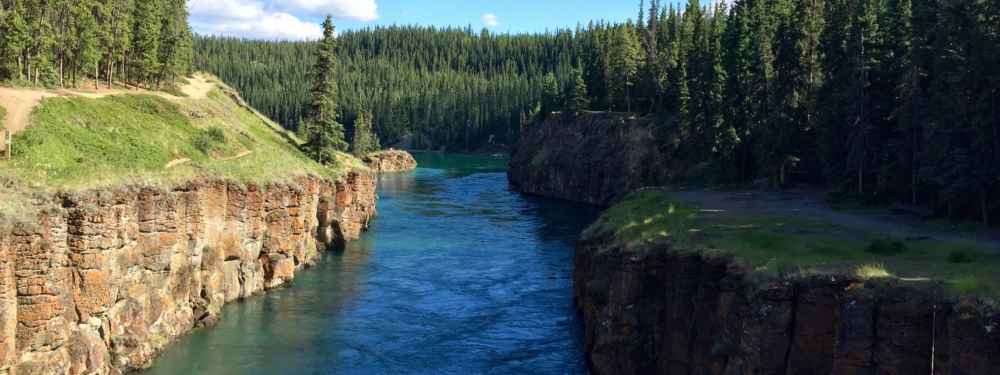
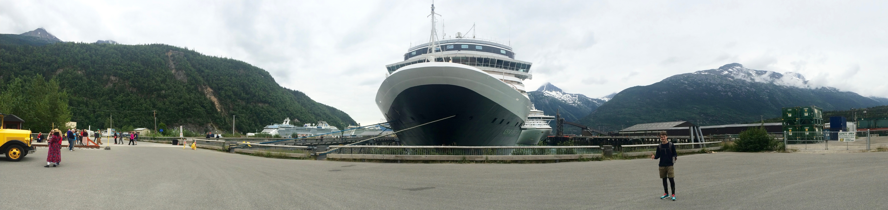
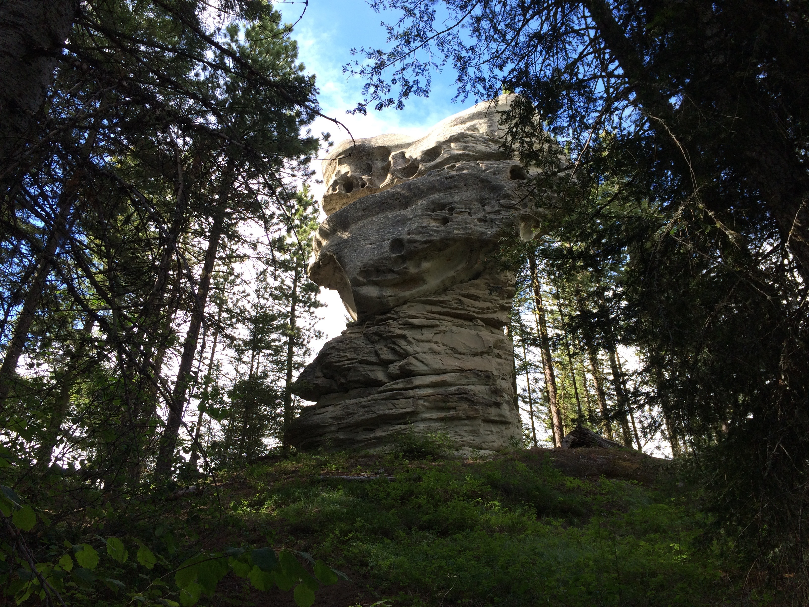
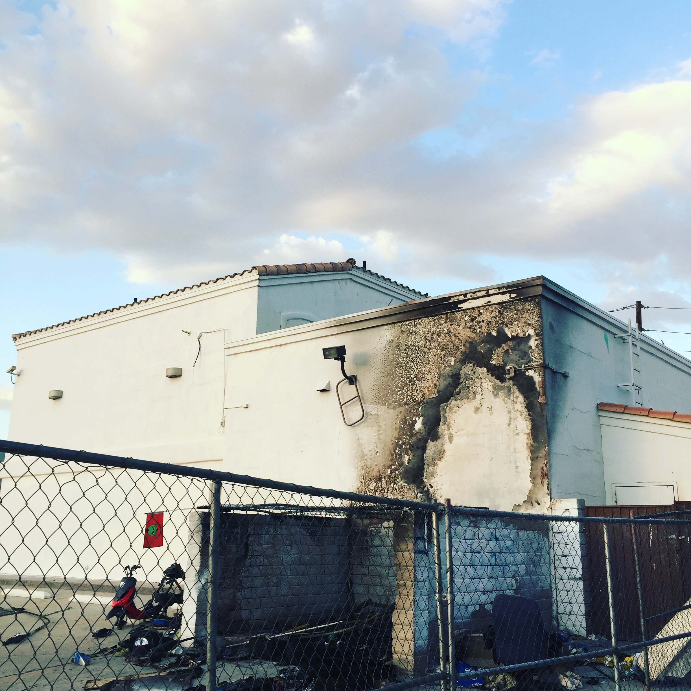
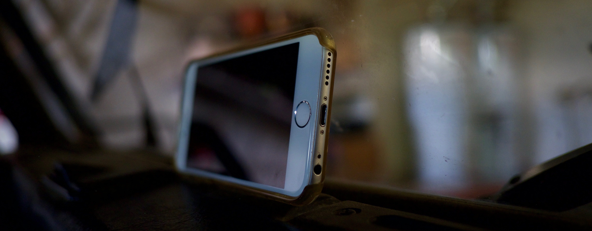

Key:
- Black = “This place sucked.”
- Red = “This place is super cool and we wanted to go but were unable to due to time limitations.”
- Blue = “We either stopped or drove through this place.”
- Yellow = “We stopped here and loved it!”
Tok

(Photo captured with iPhone 6)
The small towns like Tok which lead up to the Canadian border are characterized by what Dad and I called “Everything Shops”: stores where you could peruse every rifle and pistol clip known to man in one isle, then pick out your favorite brand of non-fat organic milk in the next. Stores where things are arranged by size, and so, “items small enough to fit in a purse” get their own display case:

(Photo captured with iPhone 6)
Whitehorse

(Photo captured with iPhone 6)
Whitehorse features awesome hiking, mountain biking, espresso, real food, and charming people. You can park basically wherever you want without getting a ticket. You can restock on supplies at decent outdoor shops. Whitehorse is charming, fun, and full of good food on a route characterized by a lack thereof.
Skagway

(Photo captured with iPhone 6)
Skagway is awesome. The food is great, the people are nice, the town is beatific and well-maintained. And then the ships arrive, and the tourists pile out, and shit hits the fan.
Luckily, none of the tourists go more than four blocks from harbor (this is not an exaggeration), so they are relatively easy to avoid. The nearby hikes are stunning and range in difficulty from easy to relatively hard, and perhaps most importantly, the drive in and out of Skagway is the most beautiful stretch of road my father and I have ever witnessed.
Cle Elum
We visited the cabin of family friends in Cle Elum and had a superb time. It’s a relatively remote area characterized by biker dudes, interesting rock formations, and an overabundance of wildlife.

(Photo captured with iPhone 6 using Moment wide-angle lens)
The weather was superb, and we enjoyed hiking, bouldering, photography, archery, and outdoor grilling and eating.
Mount St. Helens

(Photo captured with Fujifilm X-Pro1, using XF 27mm f/2.8 black lens)
Mount St. Helens was possibly the best stop of the entire trip. The landscape is so new as to seem alien. Wildflowers grow on everything, and canyons caved out of hundreds of feet of pure silt paint sinews in the mountainside.
Trees literally shot like rockets in the initial explosion now rest askew forming radial patterns across the meandering landscape, and birds and other wildlife make use of the strange new earth.
Crater Lake National Park

(Photo captured with iPhone 6)
Crater Lake National Park is stunningly beautiful. It is interesting in terms of weather, in that you drive in in blazingly hot desert and quickly elevate into windy, snow-swept mountains. There are plenty of hikes without other tourists, and the visitor center sells CLIF BARS.
Lava Beds National Monument

(Photo captured with iPhone 6)
Lava Beds National Monument was a terrific stop. The nice lady at the front desk told us a particular hike took at least an hour, and after doing it in literally 15 minutes we realized we could probably do a third of the hikes (terranean and subterranean) in the park before heading out and still leave on time - so we did.
We enjoyed spelunking, exploring, and generally gallivanting about in the aftermath of the destruction of the inner mechanisms of the earth.
Lassen Volcanic National Park

(Photo captured with Fujifilm X-Pro1, using XF 27mm f/2.8 black lens)
Lassen Volcanic National Park is stunning - even when you can barely see it. We pulled up to Bumpass Hell right as the sun began to set, and the view proved spectacular. It is not through any trickery of Photoshop that these images are so clearly imbued with blues and purples and gold.

(Photo captured with Fujifilm X-Pro1, using XF 27mm f/2.8 black lens)
We were barred from hiking Bumpass Hell because so many moronic tourists had burned themselves on the boiling hot volcanic liquids emanating all around, and so the trail was officially cordoned off. We still managed to hike a good portion of the nearby trail system, and enjoyed spectacular views of waterfalls and boiling mud pits.
Ancient Bristlecone Pine Forest
The Ancient Bristlecone Pine Forest contains the oldest trees - in fact, according to Wikipedia, the oldest living non-clonal organisms - on the planet. These trees look gnarled with time, like Ian McKellen’s eyebrows, or my grandpa Arndt’s various long-ago-broken fingers. The hikes are beautiful and fun, but it was enormously hot and so we did not go very far due to lack of water. The landscape is also dotted with a number of old mining cabins, which add a touch of history to what would otherwise be mostly a biologically interesting scene.
Reno
Reno is suffocatingly hot, ugly, and just generally despotic. It is akin to the set of Mad Max - which, remember, was filmed in Namibia - crossed with the “Wrath” part of “The Wrath of Kahn.” Should I ever enlist in the military and have to choose between deployment to Reno or Baghdad, it will prove a difficult choice.
Las Vegas
There is nothing flashy or cool about Las Vegas. It looks like an abandoned theme park from a former Soviet Bloc country. It looks like the creation of a desperate individual after a year playing Second Life and Minecraft. It looks like the homeless shack next to Hotel Galaxy blew up in a meth lab experiment gone awry. Oh wait, it looks that way because it is that way.

(Photo captured with iPhone 6)
The Video
While this does not pertain specifically to the video as it was shot entirely using iPhones, I suspect that readers of the video gear portion are interested in still photography gear as well, and so I will start out with an overview of my style of photography gear and the specifics of what gear I use, what I like, and why. If this does not interest you, scroll down to the Video Tools subsection for details on the making of the video at the top of this post.
I love photography, and generally shoot with my trusty Fujifilm X-Pro1. Fujifiilm builds incredibly high quality, durable, utilitarian cameras for the same sort of people who like Land Rovers: people who enjoy manually controlling everything, who want to have every dial and gear at their fingertips, rather than buried under a bunch of menus and settings in a computer. For this reason, the Fujifilm cameras, particularly the X-series and particularly the X-Pro1 and X-T10, feature an impressive array of fully manual dials allowing the photographer to immediately control every aspect of the captured image. The only other comparable digital cameras in terms of manual controls are the Leica M-Series digital cameras, which cost 2 to 6 times more than the top-of-the-line Fujifilm models, and the Nikon DF. (Note that the Fujifilm X-Pro2 was recently released as a successor to the X-Pro1, and features some small improvements as well as a better sensor. I have no experience with the X-Pro2, but it is most likely an excellent camera.) The below images illustrate the differences in available manual controls on each of the above listed cameras, and the links direct to the Amazon pages for each product.
Nikon Df 16.2 MP CMOS FX-Format Digital SLR Camera Body

Leica 10771 M 24MP RangeFinder Camera with 3-Inch TFT LCD Screen - Body Only (Silver/Black)

Fujifilm X-Pro 1 16MP Digital Camera with APS-C X-Trans CMOS Sensor (Body Only)

Fujifilm X-T10 Body Black Mirrorless Digital Camera

I believe that all of these cameras are equally “good”, in that they all take equally beautiful images, and they all have ridiculous specs. My choice of the X-Pro1 ultimately comes down to budget and the desire for a rangefinder, but if you want manual controls on a camera, I think any of the above cameras would be equally good. Do note however that there are a number of Leica M Series cameras, and the Monochrome, pictured above, is really definitely not for everyone. If you are looking for a good all manual camera and want to decide between the above options, I suggest Ken Rockwell and Digital Photography Review as places to find more information. Moreover, the degree of manual usability of a camera is also largely dependent on the lens elected. A good manual lens should have a manual focus ring and a manual aperture ring - as well as a manual zoom ring, if the lens zooms (I do not use zoom lenses, because I value lens speed over zoom versatility, but that really boils down to what you want to shoot and where). A good fully manual lens will look something like this:
Leica 50mm f/1.4 Summilux-M Aspherical Manual Focus Lens (11891)

I edit in Adobe Lightroom, which I have found to be far more robust than anything I will ever need both on macOS and on iOS, without being confusing or difficult to learn (like Adobe Photoshop is). I am currently in college studying Mathematics and Computer Science, but I work on the side as a photographer for various events and groups on campus, and Lightroom makes my job significantly easier.
Now let’s get to the video part of the video section of the blog post.
As a personal challenge, I decided to shoot a video of our road trip entirely on my iPhone. It quickly turned out that I could fill my iPhone’s memory in a single day (due to my large amount of music), and so I had to expand my parameters and use my father’s iPhone, too. I have an iPhone 6 128GB in Silver, and my father has an iPhone 5S 64GB in Silver.
The 6S series iPhones have superior cameras to the 6 and especially 5S, but both iPhones shot great video. I did notice that the 5S had trouble focusing through dirty glass (when the window shield needed to be cleaned), whereas the 6 almost always was able to focus on the distance through dirty glass without any issues. This is likely because the 6 has a larger aperture. The rumored new iPhones coming out this September should have far superior cameras to either, but honestly at a certain point it may be just splitting hairs. The video and photo on the 6 series iPhones is always superb, even after years of use, and I really don’t expect anything more than what my iPhone delivers for what is functionally a pocket camera.
While the iPhone 6 and 5S both feature impressive wide-angle lenses, sometimes particularly wide roads dominated my shots, and I needed a wider-angle shot. Luckily, I came prepared with a ridiculously high quality ultra-wide-angle lens and lens mount for my iPhone 6. I use the Moment Lens and Case, and I love its beautiful glass, innocuous black aesthetic, and tactile shutter button. The app is also superb.
The Moment lens allowed me to capture not only wider angle video but also far superior, ultra-wide-angle panoramas, using the native (built-in) iPhone camera app.
I often ran out of battery (since I was shooting video almost all day long), and so to combat this I relied on a small collection of battery packs. Of those, my favorite by far was the very cool-looking and functional Boostcase for iPhone 6s and 6.
I edited all of my video in iMovie on my Macbook Pro 15" Retina. I would not recommend purchasing this laptop at the moment as a major overhaul to the Macbook Pro product line is rumored to be coming sometime soon this year, and I think it’s worth waiting. That said, I bought my laptop 2 years ago, and it has held up great and is consistently over-powered, beautiful, and usable. The retina display alone is among the greatest developments in laptop innovation of the last 5 years.
My father once taught me that the trick to capturing images of fish through glass is to hold the camera at an angle subtended between about 30 and 90 degrees to the glass of the fish-tank. Remember, Dad is a fish biologist - he photographs a lot of fish. This trick proved a solid one in capturing the video above. Whenever we reached a particularly attractive portion of road, I fired up my iPhone, put it on Time-Lapse mode in the native (built-in) iOS Camera app, and held my iPhone in Landscape mode such that the top part rested against the inclined glass, and the bottom part rested immediately in front of the air vent on the dashboard.
The following image illustrates the angle at which I held the iPhones steady against the glass and dashboard.

(Photo captured with Fujifilm X-Pro1, using XF 27mm f/2.8 black lens)
Every day I exported all of my video onto my laptop, copied it from my laptop to a secondary external hard drive, and then deleted it from my iPhone to free up space for the following day. I broke my videos up into 1 to 5 minute portions so that the iOS camera software would not speed them up too much, and frequently checked to make sure the camera was still focussing correctly on the road and landscape (as opposed to the window or its encompassed reflection).
I composed and edited the final trip video only upon arrival in Flagstaff.
The Gear
As mentioned above, my Fujifilm X-Pro1, my iPhone 6, and my father’s iPhone 5S all held up and performed beautifully - except for one moment driving through Nevada, when the engine began to overheat and so we had to turn on the heater in order to get hot air out of the engine compartment, at which point both iPhones began to overheat.
Both iPhones recovered with grace and performed beautifully after they cooled off.
Besides our cameras and iPhones, a number of other gear items stood out to us as particularly rugged, well-designed, and useful. Here they are, in millennial, listicle fashion:
Mountain Hardwear Scrambler 30 OutDry Backpack
This backpack is superb. It is very waterproof (don’t go swimming with it, but rain is no problem), has a unique easy-to-open and easy-to-close cinch design, features a number of useful (as opposed to arbitrarily placed and weirdly sized) pockets, and most importantly, is the most comfortable bag of any sort I have ever worn. 10/10
Samick Sage Takedown Recurve Bow 40lb
This is my first ever take-down recurve bow, and I immediately fell in love with it. Because it is a take-down bow, I can take it apart in a manner of about 2 minutes into 3 pieces (bottom limb, center, and top limb) and easily fit the entire thing in a middle-to-large sized backpack. I bought the 40lb model, which is strong enough to pound planks off of fences (I take the 5th) and is deadly accurate. Within a few hours of practice I was shooting a 4 inch radius cluster at 20 yards. I have very little experience with archery, so this definitely felt satisfying to me.
My only complaint is that the bow did not come with a bow string or a stringer tool. Neither item is expensive, but it would have been much more convenient to include them. Moreover, consumers at this price point likely do not already have some specific string or stringer model they far prefer, so the outsourced choice would not have been an inconvenience for many. 9/10
Think Tank Photo Mirrorless Mover 20
My father and I both use the same camera case, and we both love it. The Mirrorless Mover has an awesome magnetic closure design that lets you leave your case open without worrying about stuff falling out. It features a number of small pockets, a modular organization scheme, and a rain covering hidden inside the front pocket. That said, it is not enormously good looking, the strap could be more comfortable, and I think a couple more pockets would be nice on the inside. 8/10
Spyderco Manix 2 XL Black G-10 PlainEdge knife

(Photo captured with iPhone 5S)
Ok, I admit, I have no good pictures of this knife from the trip. That said, you can sort of see the bottom of the pocket clip of the knife on the version of me in the left hand side of the ridiculous pano Dad shot above (yes I had to run around his back and pose on the other side to make this shot work), so that counts, right? Regardless, this knife is a beast. It has a thick blade and a thick handle, and feels far more like a hunting knife than like a pocket knife when open. It cuts great, holds a blade for a long time, and has a nice locking mechanism. You can flick it open quickly, though not as fast as some Gerbers I’ve owned, and it looks awesome.
I carried a Benchmade Gryptillian for years (until losing it in a bar called Amigos in Santa Ana, Costa Rica), and loved that knife to death. This knife is like the Gryptillian’s range instructor: a lot less classy, possibly cheaper, but bigger and stronger. I think it is definitely better value-per-dollar than the Benchmade, which was plagued by an unfixable, loose pocket clip and screws which always wanted to fall out. 8/10
Blundstone Original 500 Series
My Blundstones have held up for years. They’ve been used countless times to kick fires out, to push logs around in fires, to climb mountains, and while clearing brush with axe and machete at my family’s cabin in Hope, Alaska. They faired predictably well on this trip, and I only retired them to my duffel bag in the back of the truck after crossing into Oregon, where the weather was too hot to permit leather boots. 10/10
Adidas Performance Men’s Ultraboost Running Shoe
The Adidas Ultraboost running sneakers were the closest thing to Nike Flyknit Lunars available at last minute’s notice at my local running store, and I bought them thinking they felt more or less the same as the sneakers I actually wanted. This turned out to be a grave mistake. The Ultraboost sneakers feature a hard plastic “cage” (their wording, not mine) around a knit “sock.” The sock is superb, but the cage sucks. It’s extremely difficult to get the laces tight in the right places such that the cage doesn’t dig into your upper foot. Adidas is now selling an “uncaged” model, and I can see why. The Ultraboost Running Shoes are promising at first but uncomfortable as soon as you tighten the laces. Next time, I’m buying Nike. 5/10
Espresso
Ok, it’s not exactly gear, but trying to find real espresso in the Yukon was like trying to find “I’m With Her” T-Shirts in Wasilla: nigh on impossible. Next time, we’re bringing some sort of portable coffee apparatus, because driving 900+ miles a day without coffee is not easy. 0/10
Parking Permit
Dad and I often rolled into campsites around 1 AM, then paid in the morning. Halfway through the trip we discovered this magic token called the National Parks and Forests Pass, which allowed us to park wherever we wanted and cost something like $45 for the family. But until that point we were frequently woken up at ungodly hours (like, for example, 9:30 AM) by park rangers demanding our $13 contribution. So I give a 0/10 rating to not having a pass in advance, and a 8/10 rating to having a pass. (8/10 because some campsites said they had wifi but then the wifi sucked, and let’s face it, better no wifi than bad wifi.)
Dad’s Alpine Stereo
Dad’s Alpine Stereo came out back when iPods still used those really wide plugs. I’m sure they’ve improved a lot since then. But the console on Dad’s stereo won’t work unless:
- You have at least one song downloaded in the music app on your phone. You can stream music or podcasts in any app, but only if you have at least one song downloaded in the music app. Apparently this is how it checks to see if it can open an audio stream with your device in the first place.
- You pause the audio using the iPod, then unplug the iPod, before powering off the vehicle. If you do anything else or do said things in any other order, you have to start up the vehicle and then turn it off again before the stereo will recognize the iPod.
- You buy an adapter to turn the old type of cable into the new type, as there is no Bluetooth functionality.
That said, the Alpine speakers sound awesome, and it is certainly true that this speaker unit has put up with its fair share of jostling, extreme weather (from -45F to +110F), bumps, spills, etc. Given all that, I’ll give it a: 6.5/10
For those of you interested in EDC, I recently arranged, photographed, and documented my EDC for one of my favorite websites, EveryDayCarry.com. While this is not exactly the same as the EDC I had in my daypack on the journey from Anchorage to Flagstaff, it is a superset of that collection of items, and as such represents a quick synopsis of Max’s Favorite Items Which Can Fit In a Daypack. Also, it was recently selected as an Editor’s Choice on the website, so it really must be phenomenal. Check it out (in interactive format) here.
The Rig

1) A cheap alternative to a winch is a hi-lift jack in combination with a number of accessories. Ours is attached to the front of Ruby using a 4xRAC. While this setup has functioned fine for about four years, we to purchase an actual winch at some point in the near future. That said, even once we get a winch, we still need the hi-lift jack for lifting up the vehicle and getting out of certain gnarly situations.
Hi-Lift Jack ORB Off-Road Base
Hi-Lift Jack ORK Off-Road Kit
Hi-Lift Jack 4X400 4XRAC Jack Mounting System
2) Ruby’s original bumper was rusted to the point of undermining structural integrity, so we replaced it with a galvanized non-Land-Rover steel bumper, which is less susceptible to rust.
3) We attached light guards over the headlights and backlights to protect against rocks, hail, and other projectiles. These have held up well for over a dozen years and look to be in perfect condition still. The right headlight guard (from the perspective of inside the vehicle) came without its topmost bar, and when we contacted Rovers North they offered to either replace it or give us a partial refund (we opted for the latter and put the money toward part of the cost of the rear guards).
4) We attached wing and bonnet protectors to the fenders and hood, respectively, allowing us to stand and sit on the front of the vehicle without causing damage (great for zipping and unzipping the tent, capturing photos above obstacles, and just sitting and kicking back a cold one).
Land Rover Defender 90 or 110 OE Checker Plate Hood Protectors Brand New
Bonnet Protection Plate Defender up to 2007 BLACK
5) We recently installed limb risers, which we purchased from Urban Land Cruisers & Land Rovers. You can find a number of these available pre-built online, or even build your own. Ours are awesome - they block even relatively thick branches from hitting the windshield, and they are easy to take off and put back on in case you need to complete some maneuver in which they would get in the way. Our only complaint is that they make zipping and unzipping the tent a bit more difficult.
6) GreenTree Fabrication modified our stainless steel roof rack with bullet hinges, allowing us to fold down the outer shotgun-side cage on the roof rack in order to unfold the levitating platform of the rooftop tent. They did a superb job, and the hinges held up and functioned beautifully throughout the trip. We should mention that for some reason our roof rack has become slightly warped, and so GreenTree had to pull off some impressive engineering in order to make the hinges function, since the rack itself was no longer totally straight.
7) Our Cascadia Vehicle Tent is superb. It is enormously comfortable (even for Dad, who is old like Gandalf), compact, and generally well designed. That said, we do have a couple small complaints.
- The tend has a couple holes (in the corners and at the hinging point in the center) where mosquitos easily enter. We had to plug these up every night with pillows and clothing in order to wake up un-hemorrhaged.
- The zipper is designed in such a way that it is very easy to get the fabric of the tend stuck in the zipper, and very hard to get it unstuck. This could be remedied with some sort of internal rubber flap behind the zipper.
- When you drive anywhere, you accumulate thousands of squashed bugs all over the tent. Perhaps this is more in the domain of roof-rack design than tent design, but we plan (and to some extent need) to build in some sort of bug- shield in front of the tent so that it isn’t constantly getting slimed by the local micro-fauna.
- It’s not easy to steal the tent, but it could be done in a couple of hours, so in order to stay safe doing longer hikes we added extra protection. Again, perhaps this is not in the domain of the tent manufacturer to fix, but it is a real concern. To do this, we brought along a thick cable which we locked with padlocks across the breadth of the tent during the day.
Cheaper Alternative to CVT of Unknown Quality
Our Cascadia Vehicle Tent
8) We attached side-runners, which work fine.
9) We replaced the Defender 90’s center console/cubby with a seat from a Series 2, which fit in perfectly and allows for three front passengers at a time (though the middle passenger is squished, and has only a lap-belt).
Front Center Seat Back Component
Front Center Seat Bottom Component
Defender Center Cubby
10) We installed inclinometers on the front and side of the driver compartment so that we could see the X and Y angles subtended by the truck and the ground at any given moment.
Sun Company 304-R Lev-o-gage Inclinometer and Tilt Gauge
11) I don’t see it on their website, but we have a Columbia Overland jerry-can-to-tire-mount clip which works quite well. That said, our jerry can leaked about 1⁄4th of its contents whenever we were bouncing around off-road, and so we are going to replace it with a double Rotopax system and an integrated mountain bike rig. We also plan to install a double Rotopax inside the vehicle for drinking water.
RotopaX RX-UP Universal Mounting Plate
RotopaX RX-2G Gasoline Pack - 2 Gallon Capacity
RotopaX RX-2W Water Pack - 2 Gallon Capacity
12) We have superb metal lockboxes with speaker housing. The boxes house our ropes, tie down gear, lights, emergency gear, and machetes and shovels, and the speaker housing holds our awesome Alpine speakers.
Brand New Alpine 6x9-inch 6x9" 3-way Car Audio Coaxial Speakers (Pair)
13) A steering guard can significantly improve the lifetime of your vehicle’s undercarriage. Ours is stainless steel and works great.
14) We plan to install a dual battery system moving forward, allowing for both a Klingon-like secondary backup of a primary organ (battery numero uno), and the opportunity to install a Mad-Max-esque kill-switch (since Land Rovers are among the easiest vehicles in the world to steal, if you know how to drive them).
INLINE WATERPROOF 12-VOLT DUAL BATTERY ISOLATOR, ON & OFF MANUAL DISCONNECT, CUT OFF KILL SWITCH, WILL FIT 4, 6, & 8 GAUGE AWG WIRE / CABLE. GETWIREDUSA
15) We plan to install an air compressor, and if we embark on any more desert trips, a snorkel, too.
LAND ROVER DEFENDER 300Tdi Td5 DIESEL RAISED AIR INTAKE GMN038 TF MANTEC NEW
16) Due to the weight of our tent, luggage, and food, our back tires hit the plastic wheel-well-rims on bumps. Our shocks are very old, and we plan to replace them with new FOX truck shocks, which should alleviate this problem.
Fox 2.0 Performance Shock Rear Pair 83-14 Land Rover Defender 4WD 1.5-3.5" Lift
17) Our tires are awesome. In Anchorage, Dad never switched to snow tires, because with his off-road tires and the locking differential he could handle almost anything anyway. We did have to install spacers in order to fit the tires’ full turning radius, though.
BFGoodrich All-Terrain T/A KO2 Radial Tire -LT285/70R17/E 121/118R